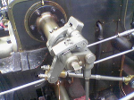
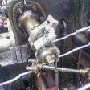
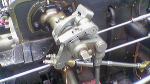

Content-aware shrinking with minimum-energy seams. These images were generated from the existing Valve example with Vision's public API.


Vision.carve(image, 112, 112)
Vision.carve(image, 150, 84)A seam is a connected path spanning opposite image edges. The algorithm minimizes the total RGB gradient energy of that path, removes it, and recalculates before removing another. Width is reduced first, then height. The source stays unchanged and surviving colors and alpha are copied exactly.
This operation only shrinks images; large reductions or textured scenes can distort subjects. Avidan and Shamir, 2007.